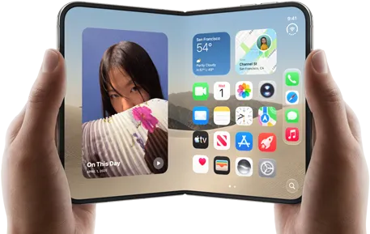
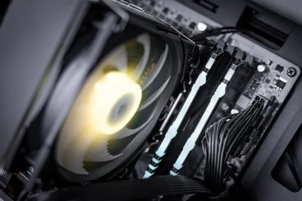

Inteligencia Artificial
Lunes 12 marzo
La Inteligencia Artificial (IA) es un campo de la informática
dedicado a crear sistemas capaces de realizar tareas que requieren
inteligencia humana, como el aprendizaje, el razonamiento, la
percepción y la toma de decisiones. Estos sistemas funcionan
mediante algoritmos y modelos matemáticos que procesan grandes
volúmenes de datos para identificar patrones y generar resultados
sin estar programados explícitamente para cada situación.
Leer más
Iphone Duo
Martes 13 marzo

El iPhone Duo es el primer iPhone plegable de Apple, presentado el 9
de septiembre de 2026 y con lanzamiento previsto para el 23 de
octubre de 2026 (previa el 16 de octubre), a un precio de partida de
unos 2.339–2.369 €.
Leer más
Componentes PC
Miercoles 14 marzo

La evolución del hardware hacia 2026 se centra en la inteligencia
artificial local, integrada mediante NPUs en los procesadores para
ejecutar agentes autónomos de forma privada y eficiente. La
conectividad ha alcanzado la era del PCIe 7.0 y la memoria DDR6,
ofrecendo anchos de banda masivos que soportan gráficos con trazado
de rayos en tiempo real y almacenamiento NVMe ultrarrápido.
Leer más